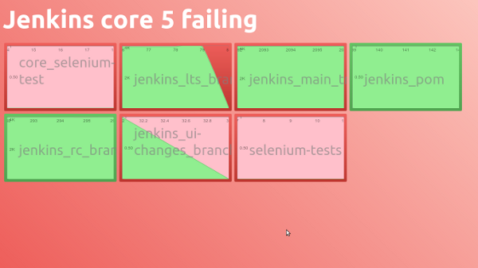

fugly-bugly-builds
Fugly or funky, bugly or bunky, they're your builds...
A dashboard to show the current status of your Jenkins builds. There are two types of dashboard currently available.
The funky build also supports jenkins matrix builds, drilling down into the matrix builds - showing you the status and history of all configurations.
Examples

How to use
Be using Jenkins, and want to display your builds on a dashboard Clone the repo into some place Point your browser at that place - with a couple of parameters That's it
Parameters?
You need to tell the page the location of your jenkins server, and the jenkins view that you want to show the dashboard for.
Example
git clone git://github.com/time4tea/fugly-bugly-builds.git
file:///home/bob/fugly-bugly-builds/fugly/fugly.html?ci=http://buildserver&view=trunk
file:///home/bob/fugly-bugly-builds/funky/funky.html?view=http://buildserver/hudson/view/trunk
History
Initial development by BSkyB at Osterley